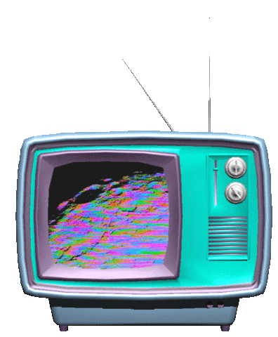
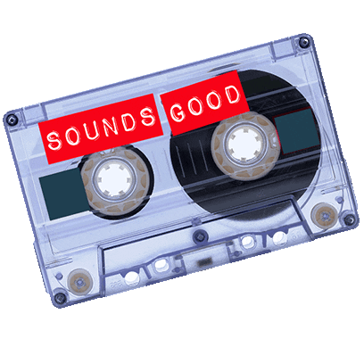
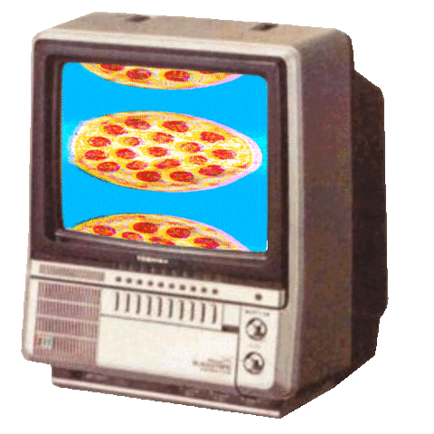
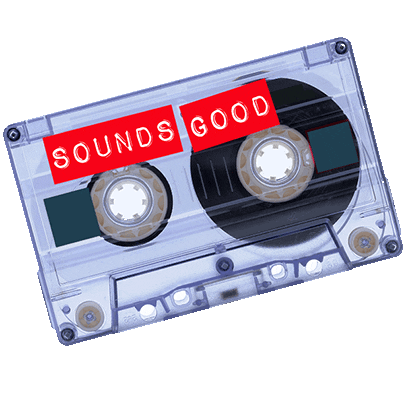
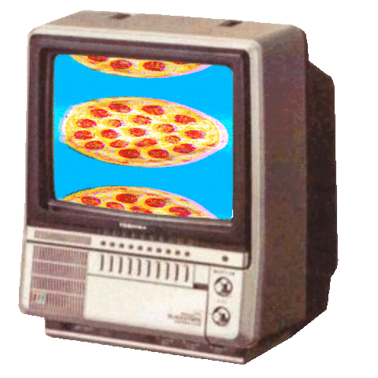

"Whatever you now find weird, ugly, uncomfortable and nasty about a new medium will surely become its signature. CD distortion, the jitteriness of digital video, the crap sound of 8-bit – all of
these will be cherished and emulated as soon as they can be avoided. It’s the sound of failure: so much modern art is the sound of things going out of control, of a medium pushing to its limits and breaking apart. The distorted guitar sound is
the sound of something too loud for the medium supposed to carry it. The blues singer with the cracked voice is the sound of an emotional cry too powerful for the throat that releases it. The excitement of grainy film, of bleached-out black and
white, is the excitement of witnessing events too momentous for the medium assigned to record them."
- Brian Eno (1996)
 


